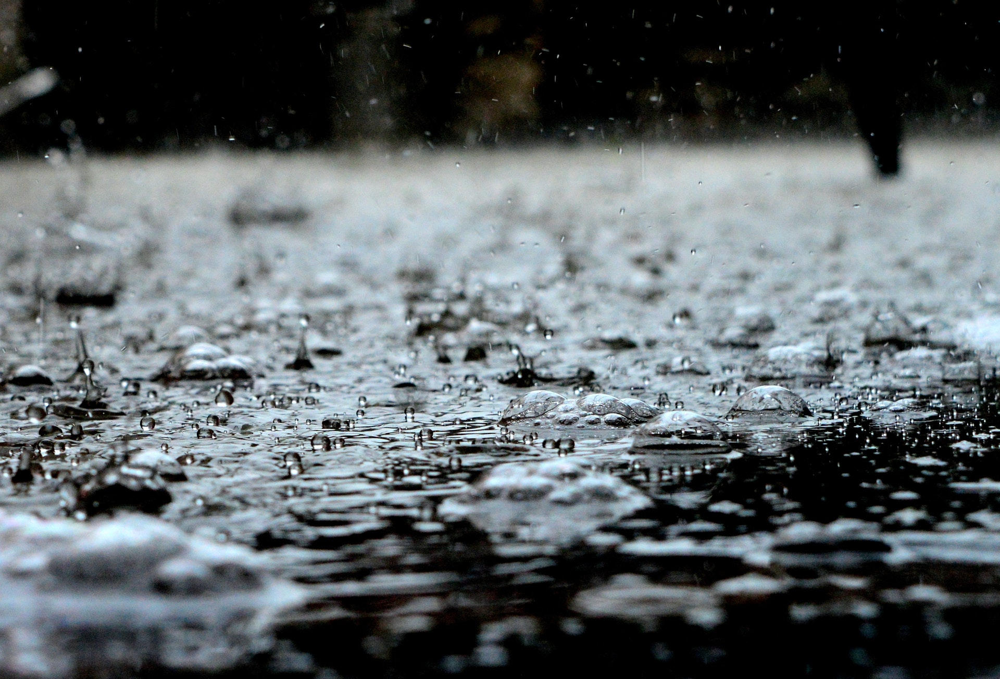

SATURDAY: Fish Haven Pancakes in the Park! 9:00 a.m. Saturday at the city park pavilion.
Weather Genie
Your ultimate weather source
Fish Haven Idaho
Weather Summary
Currently: High:
℉
Wind Chill:
℉
Humidity:
%
Wind Speed:
mph
5 Day Forecast
Bear Lake for History Buffs: Top 5 Don't-Miss Sites
By: Beth Lopez

[Fish Haven is a beautiful liitle town nestled along the banks of Bear Lake].Bear Lake’s charms are pretty apparent for
anyone interested in the outdoors, water sports, cute small towns or fresh-picked raspberries.
But beyond a lovely azure freshwater lake surrounded by cool hiking trails and berry stands, the area has a few special historic sites
that you might miss if you didn’t know better.
Behind the big blue lake and its surrounding town lies a lot of history. Early pioneers and explorers traveled through the area,
with many choosing to stay and settle. They were a very hardy bunch and endured difficulties along the trail that would make
today’s hikers shake in their boots.
Seeing these historical sites and records adds a level of impressiveness to a place that already visually stuns. When you learn
how hard people worked to get here, it makes the Bear Lake Valley all the more special. With that in mind, we’ve compiled a list
of five spots important to Bear Lake History that you won't want to miss when you visit.
Continue reading here...